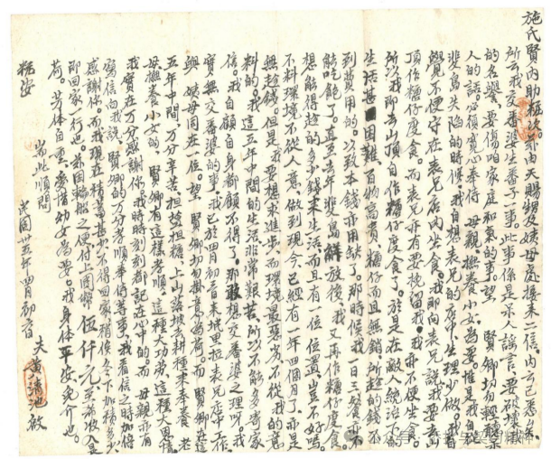

原始批信影像
保留原件影像，并通过标注连接人物、金额、家庭事务与战时背景。

Qiaopi Record · Original Image · Transcription · Translation
菲律宾马尼拉寄福建石狮｜民国三十五年四月初六日｜1946年
保留原件影像，并通过标注连接人物、金额、家庭事务与战时背景。

施氏贤内助妆次：兹由天赐甥及姨母处接来二信，内方已悉矣。所云我交番婆生番子一事，此事係是呆人谣言，要破坏我的名誉，要伤咱家庭和气的事。望贤卿切勿轻听呆人的话，必须宽心奉侍母亲，抚养小女为要。
惟是我自从斐岛失陷的时候，我自想表兄的店中生理少做，我自觉不便守在表兄店内坐食，我即向表兄说我要去山顶作糖仔度食，而表兄亦有要挽留我，我亦不便坐食，所以我即去山顶自作糖仔度食了。於是在敌人统治下的生活甚属困难，百物高贵，糖仔而且无销，所趁的钱不到出费用的，以致本钱亦用缺了。那时候我一日三餐亦不能吃饱了。
直至去年斐岛解放后，我又再作糖仔度食，想能得趁的多少钱来生活，而且有一位位置，岂不好吗？不料环境不从人意，做到现今已经有一年四个月了，亦是无趁钱。但是我要想求进步，而环境最恶劣，不从我的意料的。我这五年中间的生活非常艰苦，所以不能多寄家信。我自顾自身都顾不得了，那敢想交番婆之理呀。我实无交番婆的事，我已于四月初三日来垊里拉表兄店中工作，与姨母同在一位。望贤卿切勿挂意为荷。
而贤卿在这五年中间，万分辛苦，担盐担糖，上山落坡去耕种来奉养老母、抚养小女的，贤卿有这样孝顺，这种大功劳、这种大恩情，我实在万分感谢你。我时时刻刻都记在心中的。而母亲亦有写信向我说，贤卿的万分孝顺奉侍等事，我看信之时加倍感谢你。
而我现在积蓄甚少，不得回家，稍俟冬下加积多少，即回家一行也。兹因轮船之便，付上国币伍仟元，至希收入是荷。芳体自重，爱惜幼女为要。我身体平安，免介也。专此顺问妆安！夫黄清池启，民国卅五年四月初六日。
施氏贤内助妆次：这次由天赐甥和姨母那里接到两封来信，信中所说的事情我已经知道了。你提到我在菲律宾另娶番婆、生下孩子的传闻，这完全是糊涂人散布的谣言，是想败坏我的名声、破坏我们家庭和气的话。希望你不要轻信这些闲话，务必宽心，安心奉养母亲，照顾好女儿。
自从菲律宾沦陷以后，我想到表兄店里的生意不好，自己也不好意思一直在表兄店里白吃白住，便向表兄提出要到山上做糖仔谋生。表兄虽然挽留我，但我不愿坐食，于是去了山上自己做糖仔。敌人统治时期生活非常困难，百物昂贵，糖仔也卖不出去，赚来的钱不够开销，连本钱也亏掉了。那时我常常连一天三餐都吃不饱。
直到去年菲律宾解放以后，我又重新做糖仔谋生，本想多少能赚些钱生活，也算有个安身之处。没想到环境不如人意，做到现在已经一年四个月，仍然没有赚到钱。我一直想求得进步，但环境十分恶劣，完全不如我的预想。这五年里我的生活非常艰苦，所以不能多寄家信。我连自己都顾不过来，哪里还有另娶番婆的道理。我确实没有这件事。四月初三日我已经来到马尼拉表兄店中工作，并与姨母在一处。希望你不要挂念。
你这五年来万分辛苦，担盐担糖，上山下坡耕种，奉养老母、抚养女儿。你这样孝顺，这样大的功劳和恩情，我实在万分感谢，时时刻刻都记在心里。母亲也曾写信告诉我你如何孝顺奉侍，我看信时更加感激你。
现在我积蓄很少，暂时不能回家，等到冬天再多积攒一些，就回家一趟。趁这次有轮船之便，随信寄上国币五千元，请你收下。望你保重身体，爱惜幼女。我身体平安，不必挂念。专此顺问妆安！夫黄清池启，民国三十五年四月初六日。
| 层级 | 可保存信息 | 本批示例 |
|---|---|---|
| 信件层 | 时间、地点、寄收双方、通信方向 | 1946年，马尼拉寄石狮 |
| 人物层 | 人物身份、亲属关系、家庭角色 | 黄清池、施氏妻子、黄母、小女 |
| 资源层 | 汇款金额、用途、寄递方式 | 国币伍仟元，作为家用支持 |
| 事件层 | 澄清、解释、感谢、照护、汇款 | 澄清流言，感谢妻子持家，随批寄款 |
| 关系层 | 夫妻互动、亲属转信、家庭责任 | 妻子来信 → 丈夫回应 → 家庭关系修复 |
| 证据层 | 字段与原文短句、影像位置相连 | 每个事件可返回原批文字 |